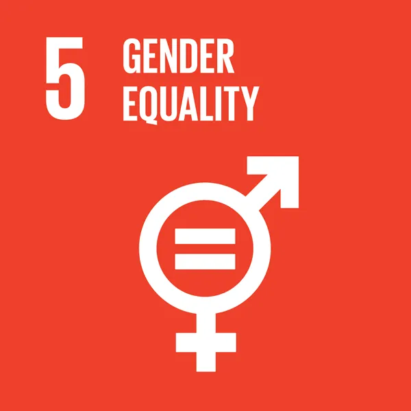
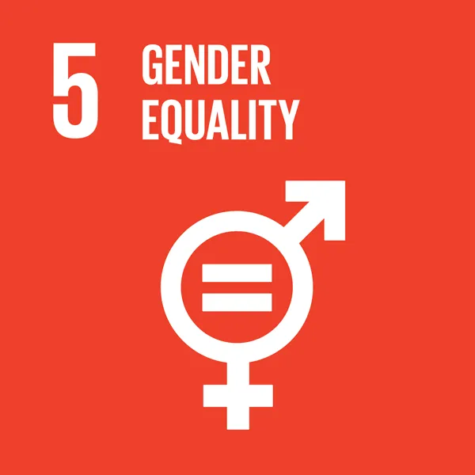

Goal 15: Sustainably manage forests, combat desertification, halt and reverse land degradation, halt biodiversity loss
Nature is critical to our survival: nature provides us with our oxygen, regulates our weather patterns, pollinates our crops, produces our food, feed and fibre. But it is under increasing stress. Human activity has altered almost 75 per cent of the earth’s surface, squeezing wildlife and nature into an ever-smaller corner of the planet.
Around 1 million animal and plant species are threatened with extinction – many within decades – according to the 2019 Global Assessment Report on Biodiversity and Ecosystem Service. The report called for transformative changes to restore and protect nature. It found that the health of ecosystems on which we and all other species depend is deteriorating more rapidly than ever, affecting the very foundations of our economies, livelihoods, food security, health and quality of life worldwide.
Deforestation and desertification – caused by human activities and climate change – pose major challenges to sustainable development and have affected the lives and livelihoods of millions of people. Forests are vitally important for sustaining life on Earth, and play a major role in the fight against climate change. And investing in land restoration is critical for improving livelihoods, reducing vulnerabilities, and reducing risks for the economy.
The health of our planet also plays an important role in the emergence of zoonotic diseases, i.e. diseases that are transmissible between animals and humans. As we continue to encroach on fragile ecosystems, we bring humans into ever-greater contact with wildlife, enabling pathogens in wildlife to spill over to livestock and humans, increasing the risk of disease emergence
If people worldwide switched to energy efficient light bulbs the world would save US$120 billion annually.
TARGETS
15.1 By 2020, ensure the conservation, restoration and sustainable use of terrestrial and inland freshwater ecosystems and their services, in particular forests, wetlands, mountains and drylands, in line with obligations under international agreements
15.2 By 2020, promote the implementation of sustainable management of all types of forests, halt deforestation, restore degraded forests and substantially increase afforestation and reforestation globally
15.3 By 2030, combat desertification, restore degraded land and soil, including land affected by desertification, drought and floods, and strive to achieve a land degradation-neutral world
15.4 By 2030, ensure the conservation of mountain ecosystems, including their biodiversity, in order to enhance their capacity to provide benefits that are essential for sustainable development
15.5 Take urgent and significant action to reduce the degradation of natural habitats, halt the loss of biodiversity and, by 2020, protect and prevent the extinction of threatened species
15.6 Promote fair and equitable sharing of the benefits arising from the utilization of genetic resources and promote appropriate access to such resources, as internationally agreed
15.7 Take urgent action to end poaching and trafficking of protected species of flora and fauna and address both demand and supply of illegal wildlife products
15.8 By 2020, introduce measures to prevent the introduction and significantly reduce the impact of invasive alien species on land and water ecosystems and control or eradicate the priority species
15.9 By 2020, integrate ecosystem and biodiversity values into national and local planning, development processes, poverty reduction strategies and accounts
15.A Mobilize and significantly increase financial resources from all sources to conserve and sustainably use biodiversity and ecosystems
15.B Mobilize significant resources from all sources and at all levels to finance sustainable forest management and provide adequate incentives to developing countries to advance such management, including for conservation and reforestation.
15.C Enhance global support for efforts to combat poaching and trafficking of protected species, including by increasing the capacity of local communities to pursue sustainable livelihood opportunities


 
